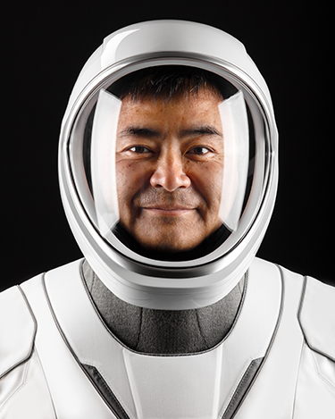
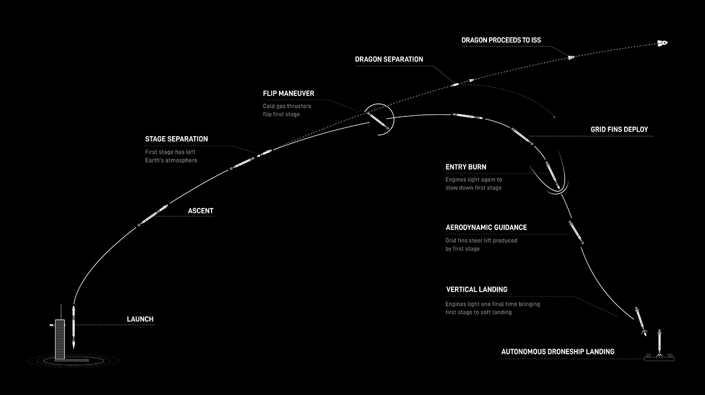

CREW-2 MISSION
SpaceX and NASA are targeting Thursday, April 22 for Falcon 9’s launch of Dragon’s second six-month operational crew mission (Crew-2) to the International Space Station (ISS) from historic Launch Complex 39A (LC-39A) at NASA’s Kennedy Space Center in Florida. The instantaneous launch window opens at 6:11 a.m. EDT, 10:11 UTC, with a backup opportunity available on Friday, April 23 at 5:49 a.m. EDT, 9:49 UTC. Following stage separation, Falcon 9’s first stage will land on the “Of Course I Still Love You” droneship, which will be stationed in the Atlantic Ocean. This is the first human spaceflight mission to fly astronauts on a flight-proven Falcon 9 and Dragon. The Falcon 9 first stage supporting this mission previously launched the Crew-1 mission in November 2020, and the Dragon spacecraft previously flew Robert Behnken and Douglas Hurley to and from the International Space Station during SpaceX’s Demo-2 mission in 2020.
As part of the Commercial Crew Program, NASA astronauts Shane Kimbrough and Megan McArthur, Japanese Aerospace Exploration Agency (JAXA) astronaut Akihiko Hoshide, and European Space Agency (ESA) astronaut Thomas Pesquet will fly aboard the Dragon spacecraft during the Crew-2 mission. On Friday, April 23, at approximately 5:30 a.m. EDT, 9:30 UTC, Dragon will autonomously dock with the International Space Station. This will be the first time Dragon will fly two international partners and it will also be the first time two Crew Dragons are attached simultaneously to the orbiting laboratory. After an approximate six-month stay, Dragon and the Crew-2 astronauts will depart from the space station no earlier than October 31 for return to Earth and splashdown in the Atlantic Ocean off the coast of Florida. The Crew-2 mission webcast will go live about 4 hours before liftoff. Tune in here to watch live.
THE ASTRONAUTS
Shane Kimbrough
Shane Kimbrough

Shane Kimbrough
Shane Kimbrough
COUNTDOWN
All Times Are Approximate
HR/MIN/SEC
EVENT
00:45:00
SpaceX Launch Director verifies go for propellant load
00:42:00
Crew access arm retracts
00:37:00
Dragon’s launch escape system is armed
00:35:00
RP-1 (rocket grade kerosene) loading begins
00:35:00
1st stage LOX (liquid oxygen) loading begins
00:16:00
2nd stage LOX loading begins
00:07:00
Falcon 9 begins engine chill prior to launch
00:05:00
Dragon transitions to internal power
00:01:00
Command flight computer to begin final prelaunch checks
00:01:00
Propellant tank pressurization to flight pressure begins
00:00:45
SpaceX Launch Director verifies go for launch
00:00:03
Engine controller commands engine ignition sequence to start
00:00:00
Falcon 9 liftoff
